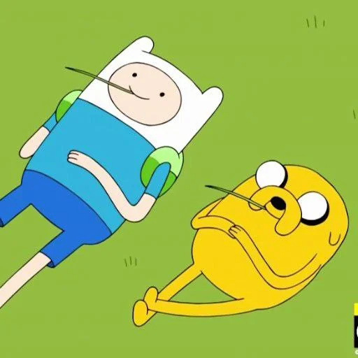

página 2 • Finn & Jake
Uma amizade de aventura
Parceria, caos bonito e a sensação de nunca enfrentar nada sozinho.
Fhellype + clara
Parceria, caos bonito e a sensação de nunca enfrentar nada sozinho.

Às vezes penso que nossa amizade parece muito com a do Finn e do Jake. Eles começaram uma jornada juntos quase sem perceber, vivendo aventuras, enfrentando desafios e descobrindo que o mais importante não era o destino, mas quem estava ao lado durante o caminho. Uma amizade cheia de momentos engraçados, conversas inesperadas e aquela sensação de que, não importa o que aconteça, sempre vai ter alguém do seu lado para enfrentar o mundo.
Finn sempre foi o aventureiro, cheio de energia e coragem, enquanto Jake tem aquele jeito tranquilo, sábio e divertido que transforma qualquer situação em algo melhor. E é bonito ver como eles se completam: um apoia o outro, ri com o outro e segue sempre em frente juntos.
De certa forma, nossa amizade também virou uma pequena aventura. Talvez não em terras mágicas como Ooo, mas em momentos simples que, quando lembramos, parecem capítulos de uma história muito especial. Porque quando você encontra alguém que caminha ao seu lado de verdade, cada dia vira uma nova aventura — exatamente como Finn e Jake viveriam.